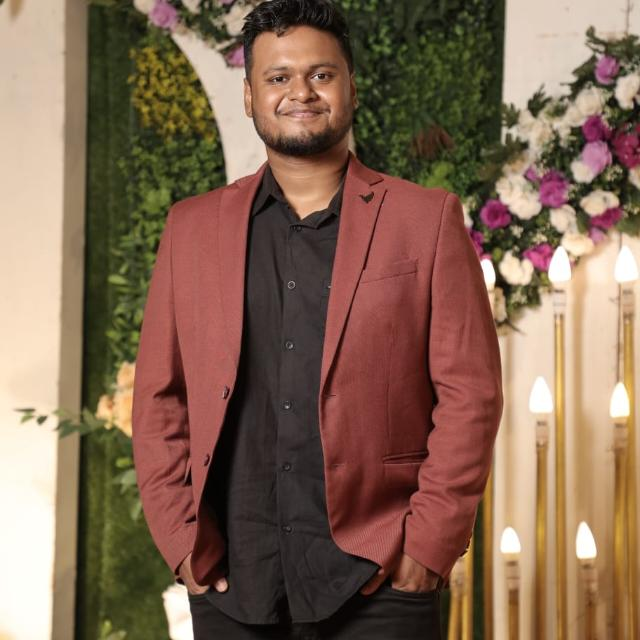

IIT Madras
Dual Degree in Data Science and Aerospace Engineering
Bengaluru, India · Available for meaningful problems
I'm Sumit, an AI Platform Software Engineer at Oracle. I work across distributed systems, Java and Python services, cloud reliability, automation, and the practical edge of AI.

About
My work sits where software engineering, cloud infrastructure, and applied AI meet. I enjoy turning unclear, high-stakes problems into reliable systems with measurable outcomes.
At Oracle, I work on the platform behind AI language services: building Java and Python microservices, strengthening deployment and observability practices, and helping systems stay dependable at scale. Outside the platform, I build tools that make a focused workflow feel simpler—like PegShot.
Career trajectory
A path shaped by curiosity, research, and building systems that operate when the stakes are real.
Dual Degree in Data Science and Aerospace Engineering
Data Science internship · automation and data processing
Member of Technical Staff intern · NLP data curation
IIT Madras · deep learning and chess intelligence
AI Platform Software Engineer · reliability at global scale
Skills
Tools matter most when they help a team ship with confidence. These are the technologies I reach for across platform work, reliability, and product engineering.
01
Java, Python, C++, SQL, Spring Boot, Django, Kafka, REST, data structures, OOP, SOLID, distributed systems.
02
LLMs, RAG, BERT, LangChain, prompt engineering, model evaluation, MongoDB, relational databases, data pipelines.
03
OCI, AWS, GCP, Azure, Kubernetes, Docker, Helm, Terraform, Ansible, Prometheus, Grafana, ELK.
04
CI/CD, Jenkins, GitHub, Git, TestRail, React, TypeScript, system design, root-cause analysis, Agile delivery.
Selected impact
Helped support Oracle AI Language Service across 100+ cloud regions, 1,500+ OCI Linux instances, and 300+ load balancers while maintaining 99.95% uptime.
Expanded supported language capability by 10× through a multilingual LLM backend migration, targeted prompt engineering, and model evaluation.
Automated CVE remediation with graph dependency resolvers, saving approximately 20 hours of manual effort each month.
Co-led a rapid recovery of the OCI Language Service after a large-scale event affecting 100+ customers.
Public project
Chrome extension · product engineering
Web capture should not force every idea into a rectangle. PegShot lets people select custom-shaped or scrolling webpage regions with four pegs, permanently redact sensitive details, extract text, copy a PNG, or export a PDF.
Credentials
OCI DevOps Professional with Containers and Kubernetes
OracleOracle Cloud Infrastructure Architect Associate
OracleUNIX and Linux Essentials
OracleJEE Advanced All India Rank 3008
Top 0.24% of candidatesStart a conversation